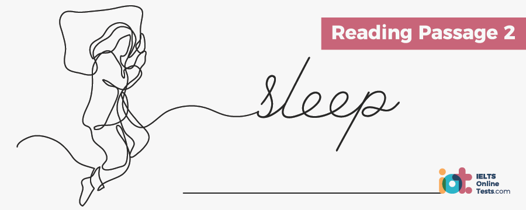
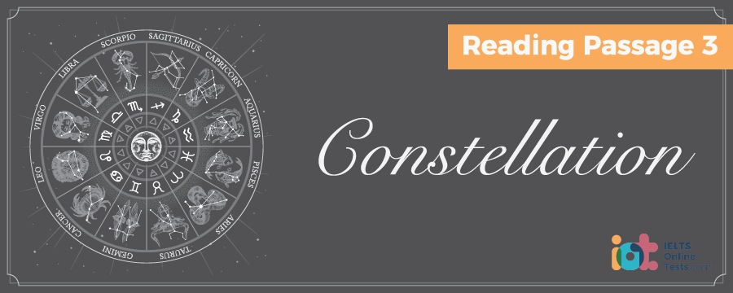

Part 1
READING PASSAGE 1
You should spend about 20 minutes on Questions 1- 12, which are based on Reading Passage 1 below.

MOUNT EVEREST AND HILLARY
- Mount Everest, also known as Sagarmartha (Goddess of the Sky), is 8,348 metres tall, the highest mountain on earth above sea level. Formed about 60 million years ago and lying between Tibet and Nepal, Mount Everest appeals to climbers of every level, from novice to experienced climber. Each mountaineer pays a considerable amount of money to an experienced guide to help them achieve a successful climb. Everest was given its official English name in 1865 by the Royal Geographic Society upon recommendation of Andrew Waugh, the British Surveyor General of India at the time.
- When Everest was officially announced as the world’s highest mountain in 1852, it won interest from people all over the world, and the idea of climbing all (lie way to the summit was viewed as the ultimate feat. Nobody was able to climb Everest until 1920 when Tibet first opened its borders to outsiders, and between 1920 and 1952, seven major expeditions failed to reach the tip of Mount Everest, In fact, the mountain has a history of adversity and failure. With advances in climbing equipment in the last ten years or so, and more experienced guides, the fatality rates have dropped from 37% in 1990 to 4% in 2004. Nonetheless, the deadliest year in Mount Everest’s history was 1996, when 19 people died near the summit.
- In 1924, Mount Everest claimed the lives of its first two climbers. George Mallory and Andrew Irvine were two British climbers, attempting to reach the summit. The men were last seen heading for the top of the mountain until clouds surrounded Everest and they disappeared. Mallory’s body was not seen again until 75 years on, in May of 1999, and Irvine’s body is yet to be found. There is still no evidence as to whether these two men made it to the top or not, although disputes rages on, Those that believe the pair were the first; to climb Everest point to two specific points, firstly, Mallory’s daughter has always said that Mallory carried a photograph of his wife on his person with the intention of leaving it on the summit when he reached it. This photo was not found on the body when it was discovered. Secondly, Mallory’s snow’ goggles were in his pocket when the body was found, indicating that he died at night. This implies that he and Irvine had made a push for the summit and were descending very late in the day. Given their known departure time and movements, had they not made the summit, it is unlikely that they would have still been out by nightfall.
- The first time the actual peak of this monstrous mountain was reached was in 1953, in a combined effort by Sir Edmund Hillary and Tenzing Norgay. On the 29th of May that year, the duo conquered this epic mountain, standing at the highest point in the world for a brief 15 minutes. After a brief but fruitless search for evidence of the 1924 Mallory expedition, they buried a cross and some candy in the snow, taking a few photographs of the historic event. As Norgay had never operated a camera, there are no photographs of Hillary on top of the mountain, just shots of Norgay, and some additional photos looking down the mountain, ensuring evidence of their conquest and that the ascent was not faked.
- When the news reached London on June 2nd, Sir Edmund Hillary was knighted in the Order of the British Empire and Norgay (a subject of the King of Nepal) was granted the George Medai by the UK, Sir Hillary turned to Antarctic exploration and led the New Zealand section of the Trans-Antarctic expedition from 1955 to 1958. In 1958, he took part in a mechanised expedition to the South Pole. Hillary continued to organise further mountain- climbing expeditions but, as the years passed, he became more and more concerned with the welfare of the Nepalese people. In the 1960s, he returned to Nepal, to aid in the development of the society, building clinics, hospitals and schools. After conquering Everest, Sir Edmund Hillary devoted most of his life to helping the Sherpa people of Nepal through the Himalayan Trust.
- In January 2007, Sir Edmund Hillary went to Antarctica to commemorate the 50th anniversary of the founding of Scott Base. He flew to the station on 18 January 2007 with a delegation including the Prime Minister. On the 22nd of April 2007, while on a trip to Kathmandu, he was reported to have suffered a fall. There was no comment on the nature of his illness and lie did not immediately seek treatment. He was hospitalized after returning to New Zealand. Sadly, Sir Edmund Hillary died of a heart attack on the morning of January the 11th 2008. Hillary’s life was marked by wonderful achievements, his giving nature, grand discovery, and excitement. But he was a humble man who did not admit to being the first man to reach the summit of Everest until long after 1386, well after the death of his climbing companion Tenzing Norgay.
- The latest record for climbing Mount Everest was set on the 30th of May in 2005 by Nepalese Mona Mulepati and PemDorje Sherpa, who were the first couple to get married on top of Mount Everest.
Part 2
READING PASSAGE 2
You should spend about 20 minutes on Questions 13-27, which are based on Reading Passage 2 below

SLEEP
A. Like many things about your body, scientists and medical professionals still have a lot to learn about the process of sleep. One earlier misconception that has now been revised is that the body completely slows down during sleep; it is now dear that the body’s major organs and regulatory systems continue to work actively – the lungs, heart and stomach for example. Another important part of the body also operates at night – the glands and lymph nodes, which strengthen the immune system. This is commonly why the body’s natural immunity is weakened with insufficient sleep.
B. In some cases, certain systems actually become more active while we sleep. Hormones required for muscle development and growth, for instance, as well as the growth of new nerve cells. In the brain, activity of the pathways needed for learning and memory is increased.
C. Another common myth about sleep is that the body requires less sleep the older we get. Whilst It is true that babies need 16 hours compared to 9 hours and 8 hours respectively for teenagers and adults, this does not mean that older people need less sleep. However, what is true if that for a number of different factors, they often get less sleep or find their sleep less refreshing. This is because as people age, they spend less time in the deep, restful stages of sleep and are more easily awakened. Older people are also more likely to have medical conditions that affect their sleep, such as insomnia, sleep apnoea and heart problems.
D. Getting a good sleep is not just a matter of your head hitting the pillow at night and waking up in the morning. Your sleep goes in cycles throughout the night, moving back and forth between deep restorative sleep and more alert stages with dreaming. As the night progresses, you spend more time in a lighter dream sleep.
E. Sleep patterns can be broken down into two separate and distinct stages – REM and NREM sleep, REM (Rapid Eye Movement) sleep is when you dream. You usually have 3 to 5 periods of REM sleep each night, lasting from 5 minutes to over an hour, during which time your body’s activities increase. Breathing becomes fast, shallow and uneven, with an increase in brain activity, heartbeat and blood pressure. Although your major muscles generally don’t move, fingers and toes may twitch and body temperature changes and you may sweat or shiver.
F. Research has concluded that this sleep is most important for your brain. It is when it is most active, processing emotions and memories and relieving stress. The areas used for learning and developing more skills are activated. In fact, the brain waves measured during REM sleep are similar to those measured when awake.
G. NREM (Noil-Rapid Eye Movement) sleep is dreamless sleep. NREM sleep consists of four stages of deeper and deeper sleep. As you move through the stages, you become more relaxed, less aware of what is happening around you and more difficult to wake. Your body’s activity will also decrease as you move through the NREM stages, acting in the opposite manner to REM sleep. Stage 1 of NREM sleep is when you are falling to sleep. This period generally lasts between 5 and 10 minutes, during which time you can be woken easily. During stage 2, you are in a light sleep- the in-between stage before your fall into a deep sleep. It lasts about 20 minutes. In stage 3, deep sleep begins, paving the way for stage 4, in which you are difficult to awake and unaware of anything around you. This is when sleep walking and talking can occur. This is the most important stage for your body. Your brain has slowed right down and is recovering. Blood flow is redirected from your brain to your large muscles allowing them to mend any damage from your day at work. People woken quickly from stage 4 sleep often feel a sense of disorientation, which is why it is helpful to use an alarm clock with an ascending ring.
H. About an hour and a half into your sleep cycle you will go from deep Stage 4 sleep back into light Stage 2 sleep, then into REM sleep, before the cycle begins again. About 75% of your sleep is NREM sleep. If you sleep for eight hours, about six of them will be NREM sleep. As the night progresses, you spend more time in dream sleep and lighter sleep.
I. When you constantly get less sleep (even 1 hour less) than you need each night, it is called sleep debt. You may pay for it in daytime drowsiness, trouble concentrating, moodiness, lower productivity and increased risk of falls and accidents. Although a daytime nap cannot replace a good night’s sleep, it can help make up for some of the harm done as a result of sleep debt. But avoid taking a nap after 3 pm as late naps may stop you getting to sleep at night. And avoid napping for longer than 30 minutes as longer naps will make it harder to wake up and get back into the swing of things.
Part 3
READING PASSAGE 3
You should spend shout 20 minutes on Questions 28 – 40, which are based on Reading Passage 3 below.

Constellation
A. A constellation is a group of stars which when viewed collectively appear to have a physical proximity’ in the sky. Constellation boundaries and definitions as used today in Western culture, and as defined by the International Astronomical Union (IAU), were formalised in 1930 by Eugene Delporte. There are 88 official constellations as recognised by the IAU, those visible in the northern hemisphere being based upon those established by the ancient Greeks, The constellations of the southern hemisphere – since invisible to the Greeks due to geographical location – were not defined until later in the early modem era.
B. Arguably, the twelve constellations through which the sun passes – as used to represent the signs of the zodiac to define birth characteristics – are the most culturally significant and well known of those established by the ancient Greeks. Cultural differences in Interpretation and definition of star constellations mainly relate to these zodiac interpretations, Chinese constellations, for example, which are different to those defined in the western world due to the independent development of ancient Chinese astronomy, includes 28 ‘Xiu’ or ‘mansions’ instead of the 12 western zodiac counterparts. In Hindu/Vedic astronomy, in which constellations are known as ‘rashis’, 12 rashi corresponding directly to the twelve western star signs are acknowledged; these are however, divided again into 27 ‘Nakshatras’ or ’lunar houses’. Many cultures have an intricate mythology behind the stars and their constellations. In Greek mythology, for example Pegasus, the winged horse, is said to have sprung from the decapitated head of Medusa, and later was used by the God King Zeus to carry thunder and lightning to Earth, before being put into a constellation.
C. In Western astronomy, all modern constellation names derive from Latin, some stars within the constellations are named using the genitive form of the Latin word by using the usual rules of Latin grammar. For example the zodiac sign for the Fish constellation Pisces relates to Piscium. In addition, all constellation names have a standard three-letter abbreviation as assigned by the IAU, under which, for example, Pisces becomes PSC.
D. Some star patterns often wrongly considered constellations by laymen are actually ‘asterisms’ – a group of stars that appear to form patterns in the sky -and are not in fact one of the 88 officially divided areas truly defined as a constellation. A famous example of an asterism oft mistaken for a constellation is the Big Dipper’ (as it is termed in North America) or the ‘Plough’ as it is known in the UK. In astronomical terms, this famous star formation is in fact considered only part of the larger constellation known as Ursa Major.
E. In order to identify the position of stars relative to the Earth, there are a number of different celestial coordinate systems that cart provide a detailed reference point in space. There are many different systems, all of which are largely similar with the exception of a difference in the position of the fundamental plane – the division between northern and southern hemispheres. The five most common celestial systems are the Horizontal system, the Equatorial system, the Ecliptical system, the Galactic system and the Supergalactic system.
F. The launch of the Hubble space telescope in April 1990 changed the way that astronomers saw the universe, providing detailed digital images of constellations, planets and gas- clouds that had never been seen before. Compared to ground-based telescopes, Hubble is not particularly large. With a primary mirror diameter of 2.4 meters (94.5 inches). Hubble would be considered a medium-size telescope on the ground. However, the combination of its precision optics, state-of-the-art instrumentation, and unprecedented pointing stability and control, allows Hubble to more than make up for its lack of size, giving it a range of well over 12 billion light years.
G. The telescope’s location above the Earth’s atmosphere also has a number of significant advantages over land based telescopes. The atmosphere bends light due to a phenomenon known as diffraction (this is what causes starlight to appear to twinkle and leads to the often blurred images seen through ground-based telescopes). The Hubble Space Telescope can also observe infrared light that would otherwise be blocked by the atmosphere as the wavelength (distance between successive wave crests) of ultraviolet light is shorter than that of visible light.
H. Despite early setbacks – one of the reflective mirrors had to be replaced after finding that it had been ground incorrectly and did not produce the images expected – the telescope has reignited interest in space amongst the general public – a requirement, given that taxpayer funding paid for the research, deployment and maintenance of the telescope.
Part 1
Questions 1–6
Answer the questions below using NO MORE THAN THREE WORDS AND/OR A NUMBER from the passage for each answer.
Write your answers in boxes 1 – 6 on your answer sheet.
Who suggested that the name Everest be used to refer to the mountain?
1
Which country prevented explorers climbing Everest until 1920?
2
What has not yet been recovered?
3
What was not found on Mallory’s body that indicates he may have reached the summit?
4
Who was photographed at the top of the mountain?
5
What was the name of Hillary’s charitable organisation?
6
Questions 7–12
Do the following statements agree with the information given in the reading passage?
In boxes 7- 12 on your answer sheet write
| TRUE. | if the statement agrees with the information | |
| FALSE. | if the statement contradicts the information | |
| NOT GIVEN. | If there is no information on this |
7.
8.
9.
10.
11.
12.
Part 2
Questions 13-16
Do the following statements agree with the information, given in the reading passage?
In boxes 13-16 on your answer sheet write
| TRUE. | if the statement agrees with the information | |
| FALSE. | if the statement contradicts the information | |
| NOT GIVEN. | If there is no information on this |
13.
14.
15.
16.
Questions 17-20
Complete the sentences below using NO MORE THAN THREE WORDS AND/OR A NUMBER from the passage for each answer,
Write your answers in boxes 17–20 on your answer sheet.
REM sleep can help reduce 17
During REM sleep, 18 are similar to those recorded whilst awake.
During Stage 1 NREM sleep, you can be 19 with little effort.
Suddenly being woken from deep sleep can cause 20
Questions 21-22
Choose TWO letters, A-E.
Write your answers in boxes 21-22.
NB Your answers may be given in either order.
REM sleep
Questions 23-27
The reading passage has nine paragraphs, A-I.
Which paragraph contains the following information?
Write the correct letter A-I in boxes 23-27.
23.
24.
25.
26.
27.
Part 3
Questions 28-35
Reading Passage 1 has eight paragraphs A-H.
Choose the correct heading for paragraphs A-H from the list of headings below.
Write the correct number i-xii in boxes 28-35.
| List of Headings | ||
| i. | Different methods of locating and identifying | |
| ii. | A better view of the constellations | |
| iii. | Technological advances in research and development | |
| iv. | Atmospheric weaknesses of telescopes in orbit | |
| v. | Different interpretations of star groupings | |
| vi. | Common misconceptions | |
| vii. | Bypassing terrestrial limitations | |
| viii. | Renewed interest in the stars | |
| ix. | Ethnic differences in celestial mapping | |
| x. | Formal marking of constellations | |
| xi. | Universal myths of constellations | |
| xii. | Historical and modern reference | |
28.
29.
30.
31.
32.
33.
34.
35.
Questions 36-40
Complete the summary below using NO MORE THAN TWO WORDS.
Write the correct answers in boxes 36-40.
Despite an initial flaw in a 36 , the Hubble space telescope is superior to telescopes on land as it can identify 37 which would not normally reach the Earth’s surface. This is all the more impressive given that Hubble is only classified as a 38 telescope. Being above the atmosphere, it also has the advantages of not being affected by 39 , which would otherwise lead to 40 images. |